| item | wording |
|---|---|
| 1. | I often find myself performing tasks that I had intended to do days before. |
| 2.* | I do not do assignments until just before they are to be handed in. |
| 3.* | When I am finished with a library book, I return it right away regardless of the date it is due. |
| 4. | When it is time to get up in the morning, I most often get right out of bed. |
| 5. | A letter may sit for days after I write it before mailing it. |
| 6. | I generally return phone calls promptly. |
| 7. | Even with jobs that require little else except sitting down and doing them, I find they seldom get done for days. |
| 8. | I usually make decisions as soon as possible. |
| 9. | I generally delay before starting on work I have to do. |
| 10.* | I usually have to rush to complete a task on time. |
Validity and Reliability
Data Analysis for Psychology in R 3
Dr Josiah King
Psychology, PPLS
University of Edinburgh
Course Overview
Week 9 TR;DL
- PCA is for reduction
- EFA is for exploring the underlying structure of what is measured by a set of items
- CFA is for testing an a priori theoretical structure of what is being measured by a set of items
- in diagrams, CFA is like EFA, but some arrows are absent (these paths are zero)
- we test “model fit” by asking how well the model reproduces the observed covariance matrix
- if it doesn’t fit well, we can look at re-specifying our model. But this becomes exploratory!
This week
- Construct validity in its various forms
- Reliability of measurement and how we estimate it
Initial thoughts
- Q: what does it mean for a measurement tool to be a “valid” measure of X?
- Q: what does it mean for a measurement tool to be a “reliable” measure of X?
Construct Validity
What is Construct Validity?
Whether our measurement instrument actually measures the thing we think it measures.
General Procrastination Scale (GPS)
(Lay, 1986)
| item | wording |
|---|---|
| 11. | When preparing to go out, I am seldom caught having to do something at the last minute. |
| 12. | In preparing for some deadline, I often waste time by doing other things. |
| 13.* | I prefer to leave early for an appointment. |
| 14.* | I usually start an assignment shortly after it is assigned. |
| 15. | I often have a task finished sooner than necessary. |
| 16. | I always seem to end up shopping for birthday or Christmas gifts at the last minute. |
| 17. | I prefer dogs to cats. |
| 18. | I usually accomplish all the things I plan to do in a day. |
| 19. | I am continually saying I'll do it tomorrow. |
| 20. | I usually take care of all the tasks I have to do before I settle down and relax for the evening. |
We just assessed.. face validity
Face validity: The extent to which a measurement tool appears, on the surface, to measure what it claims to measure.
biscuit time [face validity]
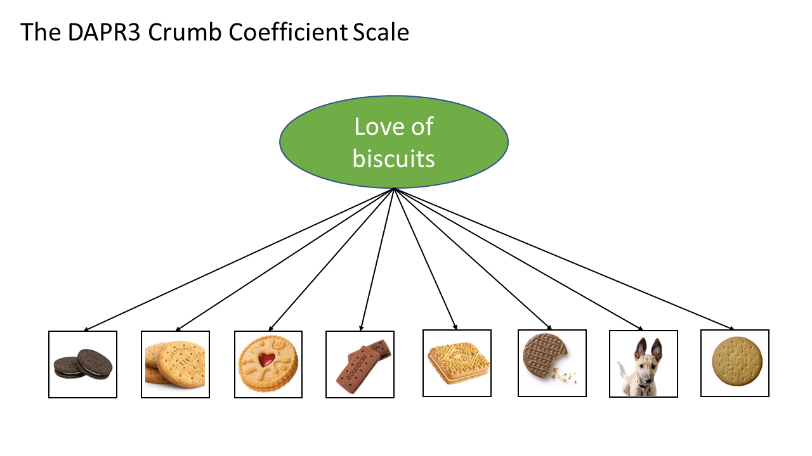Questionnaire Bias
There’s a big problem with many questionnaires - they are very prone to biases.
- selection bias (e.g., people who are severely depressed typically don’t respond to questionnaires)
- interviewer bias (e.g., confusing instructions, leading questions)
- response bias
- extreme response bias (tends to choose the ends of the scale)
- neutral response bias (tends to choose the middle of the scale)
- acquiescence bias (tends to always agree)
- dissent bias (tends to always disagree)
- question order bias (responses depend on order of questions)
- social desirability/conformity bias (responds according to what they think is expected of them, rather than their own beliefs)
What about “subtle items”?
If a respondent knows the intended construct, they can answer accordingly.
People try and come up with ‘subtle items’ for which it’s harder to ‘fake good’.
- e.g., for procrastination: “When I look at my future self, I feel like I’m looking at a stranger.”
(idea: disconnection from future self makes it easier to say ‘that’s a future me problem’!)
Some weird real examples (not sure what construct they are supposed to map to!):
- “My father was a good man.”
- “My hands and feet are usually warm enough.”
- “I would like to be a florist.”
- “I sometimes enjoy teasing animals”.
My New Optimal Procrastination Quotient (MNOPQ)
(Me, last week)
In order to procrastinate, I spent some time trying to make a new measure of procrastination!
Version 1
| item | wording |
|---|---|
| J1 | I believe it is necessary to delay critical decisions until someone else can provide guidance. |
| J2 | It is better to put off exercising until I feel fully motivated and optimistic. |
| J3 | For work that requires creative thinking or imagination, it is better to wait until thoughts spontaneously arise |
| J4 | It is better to have a fully fledged out plan before starting a piece of work |
What aspects of “procrastination” does the MNOPQv1 measure miss?
It turns out, theory suggests that ‘procrastination’ typically involves:
- the behaviour of delaying things
- negative affect towards delaying things
- attempts to (irrationally) justify delays
M.N.O.P.Q Version 2
How about now?
| item | domain | wording |
|---|---|---|
| J1 | Justification | I believe it is necessary to delay critical decisions until someone else can provide guidance. |
| J2 | Justification | It is better to put off exercising until I feel fully motivated and optimistic. |
| J3 | Justification | For work that requires creative thinking or imagination, it is better to wait until thoughts spontaneously arise |
| J4 | Justification | It is better to have a fully fledged out plan before starting a piece of work |
| A1 | Affect | I feel high levels of anxiety and self-reproach when I realize I have needlessly delayed a task. |
| A2 | Affect | I often choose a pleasurable, easy activity over a necessary, more difficult task. |
| A3 | Affect | Even when I know a delay will cause me pain later, I still struggle to begin the task now. |
| B1 | Behaviour | I often begin a task only hours before the final deadline. |
| B2 | Behaviour | I frequently find myself performing tasks that I intended to do several days earlier. |
| B3 | Behaviour | I regularly experience moments where I have to rush to complete a task on time. |
We just assessed.. content validity
Content validity: The extent to which we have a representative sample of items to cover the content domains that our theory dictates exist.
biscuit time [content validity]

M.N.O.P.Q Version 2
| item | wording |
|---|---|
| J1 | I believe it is necessary to delay critical decisions until someone else can provide guidance. |
| J2 | It is better to put off exercising until I feel fully motivated and optimistic. |
| J3 | For work that requires creative thinking or imagination, it is better to wait until thoughts spontaneously arise |
| J4 | It is better to have a fully fledged out plan before starting a piece of work |
| A1 | I feel high levels of anxiety and self-reproach when I realize I have needlessly delayed a task. |
| A2 | I often choose a pleasurable, easy activity over a necessary, more difficult task. |
| A3 | Even when I know a delay will cause me pain later, I still struggle to begin the task now. |
| B1 | I often begin a task only hours before the final deadline. |
| B2 | I frequently find myself performing tasks that I intended to do several days earlier. |
| B3 | I regularly experience moments where I have to rush to complete a task on time. |
I have my measure of “procrastination”.
- Q: what measures will it hopefully correlate highly with?
- hint - we have already seen something in this lecture!
- hint - we have already seen something in this lecture!
- Q: What measures would it be problematic if the MNOPQ correlated too highly with them?
We just assessed.. convergent/discriminant validity
Convergent validity: The degree to which scores on a measurement tool are related to scores on other measures of the same construct.
Discriminant validity: The extent to which scores on a measurement tool do not correlate strongly with measures of unrelated constructs.
biscuit time [convergent/discriminant validity]
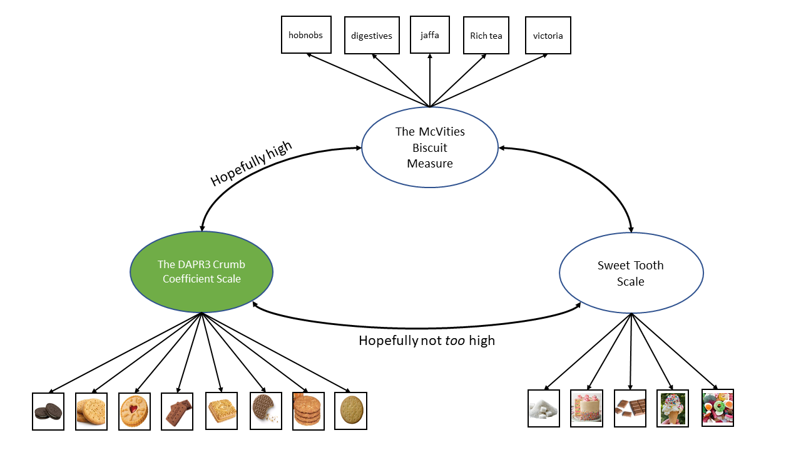Validity of the validity procedure? gahh

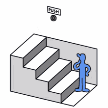
M.N.O.P.Q Version 2
| item | wording |
|---|---|
| J1 | I believe it is necessary to delay critical decisions until someone else can provide guidance. |
| J2 | It is better to put off exercising until I feel fully motivated and optimistic. |
| J3 | For work that requires creative thinking or imagination, it is better to wait until thoughts spontaneously arise |
| J4 | It is better to have a fully fledged out plan before starting a piece of work |
| A1 | I feel high levels of anxiety and self-reproach when I realize I have needlessly delayed a task. |
| A2 | I often choose a pleasurable, easy activity over a necessary, more difficult task. |
| A3 | Even when I know a delay will cause me pain later, I still struggle to begin the task now. |
| B1 | I often begin a task only hours before the final deadline. |
| B2 | I frequently find myself performing tasks that I intended to do several days earlier. |
| B3 | I regularly experience moments where I have to rush to complete a task on time. |
I measure a bunch of people on my “procrastination scale”.
- Q: what trustworthy things do we hope scores on the MNOPQ correlate with?
- Q: what do we hope scores on the MNOPQ predict in the future?
We just assessed.. criterion validity
Criterion validity: The degree to which scores on a measurement tool correlate with some independent, external standard (or ‘criterion’). Very often this is the prediction of some future event.
biscuit time [criterion validity]

biscuit time [criterion validity] 2

biscuit time [predictive validity]

ERRORRRRRRR

Measurement error
All measurement is befuddled by error McNemar (1946, p.294)
- Every measurement we take contains some error, goal is to minimise it
- Error can be:
- Random = Unpredictable. Inconsistent values due to something specific to the measurement occasion
- Systematic = Predictable. Consistent alteration of the observed score due to something constant about the measurement tool
What is Reliability?
How consistently our measurement instrument measures whatever it is measuring.
One way to think about it..
take two measurements - how close are they?
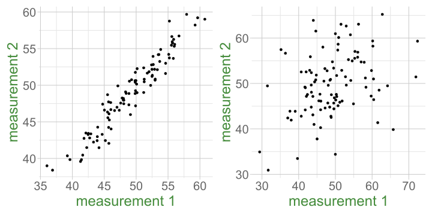An Alternative Framing
imagine we could see the “truth” - how much variance in our measurements is due to the true values?
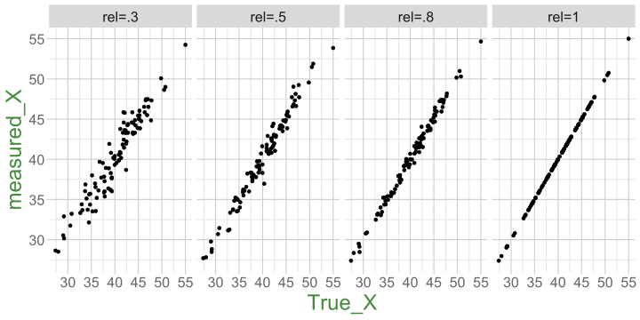A Diagram of Measurement

Reliability - A General Formula
\[ \text{Reliability} = \frac{Var(\text{True Scores})}{Var(\text{True Scores})+Var(\text{Error})} = \frac{Var(\text{True Scores})}{Var(\text{Observed Scores})} \]
\[ \begin{align*} \rho_{XX'} &= \frac{Var(T_x)}{Var(X)} = \frac{Var(T_x)}{Var(T_x) + Var(e_x)} = 1 - \frac{Var(e_x)}{Var(X)} \\ &X\text{ is observed score on scale }X \\ &T_x\text{ is True scores} \\ &e_x\text{ is error} \end{align*} \]
Why Care?
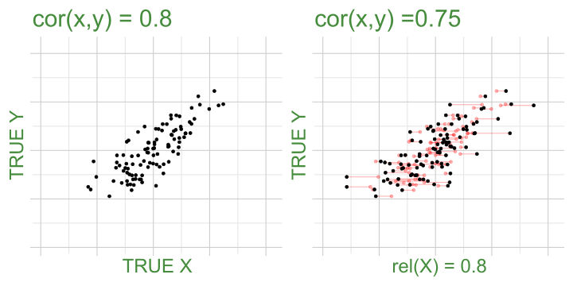Why Care? (2)
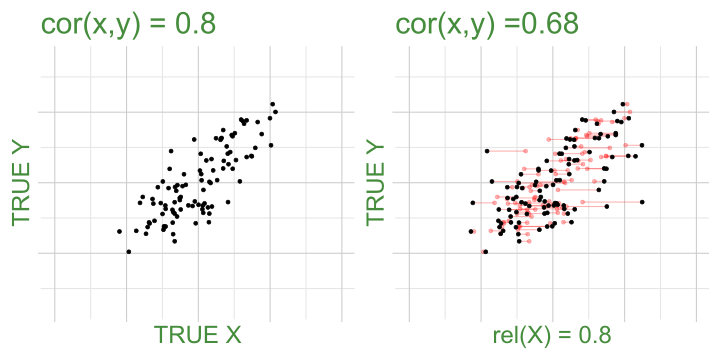Why Care? (3)
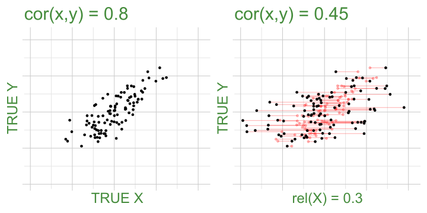Why Care? (4)
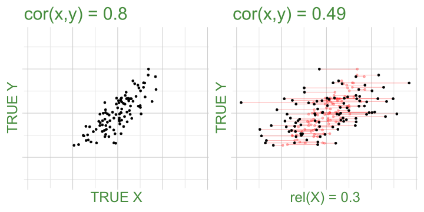Why Care? (5)
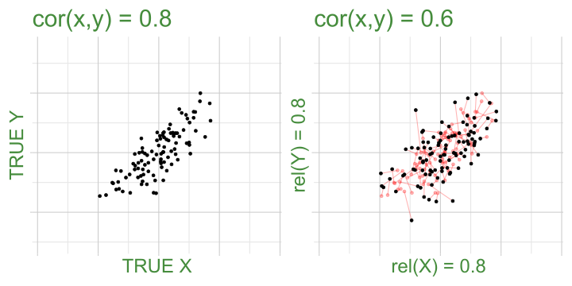Why Care? (6)
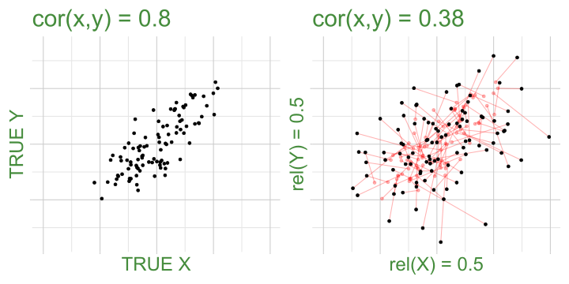Why Care? (7)
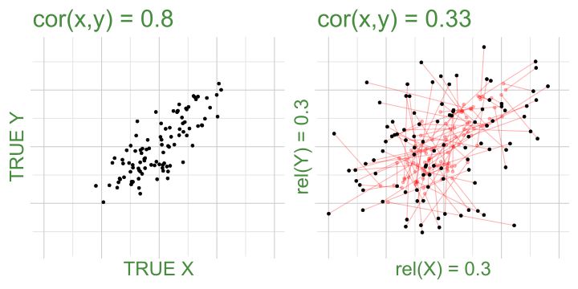Corrections for attenuation due to unreliability
With estimates of each measures reliability, we can “correct” correlations
We assumes errors are uncorrelated with truth
\[ r^*_{xy} = \frac{r_{xy}}{\sqrt{ \rho^2_{0x} \rho^2_{0y}}} \]
\(r^*_{xy}\) is the correlation between \(x\) and \(y\) after correcting for attenuation
\(r_{xy}\) is the correlation before correcting for attenuation
\(\rho^2_{0x}\) is the reliability of \(x\)
\(\rho^2_{0y}\) is the reliability of \(y\)
How to Estimate Reliability
One ‘test’
One ‘test’
Observed_Score True_score Error
1 39.7 ?? ??
2 33.8 ?? ??
3 43.7 ?? ??
4 29.1 ?? ??
5 40.2 ?? ??
6 35.3 ?? ??
... ... ... ...Two ‘tests’

Where do different tests come from?
- take the same test twice
- take different versions of the same test
- get different people to administer the same test to the same people
- multi-item measures
- kind of assumes the items within a measure are all different possible versions of the test
How will we estimate reliability?
- take the same test twice - ICC
- take different versions of the same test - ICC
- get different people to administer the same test to the same people - ICC
- multi-item measures - alpha/omega
- kind of assumes the items within a measure are all different possible versions of the test
Two ‘tests’
Error1 Observed_Score1 True_score Observed_Score2 Error2
1 ?? 39.8 ?? 41.1 ??
2 ?? 37.1 ?? 38.4 ??
3 ?? 50.9 ?? 49.8 ??
4 ?? 47.9 ?? 45.6 ??
5 ?? 40.4 ?? 40 ??
6 ?? 51.8 ?? 51.1 ??
... ... ... ... ... ...Two ‘tests’
Error1 Observed_Score1 True_score Observed_Score2 Error2
1 ?? 39.8 40.5 41.1 ??
2 ?? 37.1 37.7 38.4 ??
3 ?? 50.9 50.3 49.8 ??
4 ?? 47.9 46.8 45.6 ??
5 ?? 40.4 40.2 40 ??
6 ?? 51.8 51.5 51.1 ??
... ... ... ... ... ...Two ‘tests’
Error1 Observed_Score1 True_score Observed_Score2 Error2
1 -0.7 39.8 40.5 41.1 0.7
2 -0.6 37.1 37.7 38.4 0.6
3 0.5 50.9 50.3 49.8 -0.5
4 1.1 47.9 46.8 45.6 -1.1
5 0.2 40.4 40.2 40 -0.2
6 0.3 51.8 51.5 51.1 -0.3
... ... ... ... ... ...
.. ... ... ... ... ...
. ... ... ... ... ...
VAR 0.508 25.86 25.173 25.502 0.508ICC
There are various formulations of ICC, but the basic principle = ratio of variance between groups to total variance.
\[ \begin{align} ICC &= \frac{\sigma^2_{b}}{\sigma^2_{b} + \sigma^2_{e}} \\ \qquad \\ \textrm{Where:}& \\ \sigma^2_{b} &= \textrm{variance between clusters} \\ \sigma^2_{e} &= \textrm{variance within clusters (residual variance)} \end{align} \]
in R: ICC() function from the psych package
- lots of versions depending on how many ‘judges rate each target’ and whether we want to generalise to a larger population of ‘judges’
Reliability for multi-item measures
We have a sample of all possible items we might use for measuring X
- so sort of exchangeable tests
each item represents same Truth, to same degree (let’s assume)
cov(item1, item2)is an estimate ofvar(T)- and so is
cov(item2, item3) - and
cov(item3, item4),cov(item1, item3)…
- and so is
So let’s take the average covariance, and call that “truth”
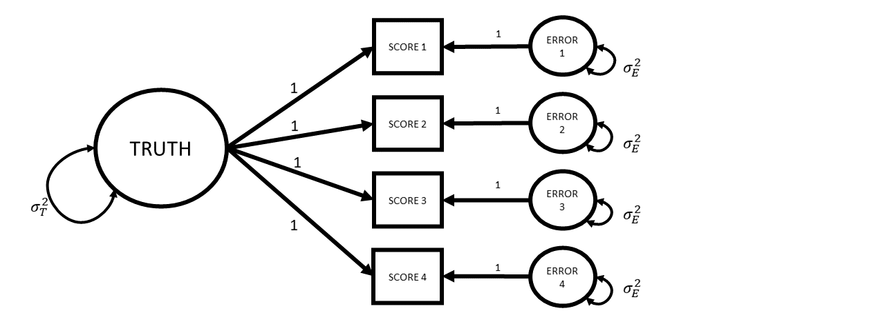
Cronbach’s Coefficient alpha
\[ \begin{align*} \alpha=\frac{k}{k-1}\left( \frac{\sum\limits_{i\neq}\sum\limits_j\sigma_{ij}}{\sigma^2_X} \right) = \frac{k^2 \,\,\,\overline{\sigma_{ij}}}{\sigma^2_X} \\ k \text{ is the number of items in scale X} \\ \sigma^2_X \text{ is the variance of all items in scale X} \\ \sigma_{ij} \text{ is the covariance between items }i\text{ and }j \\ \end{align*} \]
In R: the alpha() function from the psych package
Cronbach’s Coefficient alpha

\[ \begin{align*} \alpha=\frac{k}{k-1}\left( \frac{\sum\limits_{i\neq}\sum\limits_j\sigma_{ij}}{\sigma^2_X} \right) = \frac{k^2 \,\,\,\overline{\sigma_{ij}}}{\sigma^2_X} \\ k \text{ is the number of items in scale X} \\ \sigma^2_X \text{ is the variance of all items in scale X} \\ \sigma_{ij} \text{ is the covariance between items }i\text{ and }j \\ \end{align*} \]
\[
\begin{align}
&= \frac{\text{average covariance}}{\text{total score variance}}\\
\quad \\
&= \frac{\text{true variance}}{\text{total score variance}} \\
\end{align}
\]
In R: the alpha() function from the psych package
The Assumed Measurement Model
What If Instead…

What If Instead…

McDonald’s Omega
\[ \begin{align*} \omega_{total} = \frac{ \left( \sum\limits_{i=1}^{k}\lambda_i\right)^2 }{ \left(\sum\limits_{i=1}^{k}\lambda_i \right)^2 + \sum\limits_{i=1}^{k}\theta_{ii} } \\ k \text{ is the number of items in scale}\\ \lambda_i \text{ is the factor loading for item }i\\ \theta_{ii}\text{ is the error variance for item }i\\ \end{align*} \]
in R: the omega() from function from the psych package.
McDonald’s Omega
\[ \begin{align*} \omega_{total} = \frac{ \left( \sum\limits_{i=1}^{k}\lambda_i\right)^2 }{ \left(\sum\limits_{i=1}^{k}\lambda_i \right)^2 + \sum\limits_{i=1}^{k}\theta_{ii} } \\ k \text{ is the number of items in scale}\\ \lambda_i \text{ is the factor loading for item }i\\ \theta_{ii}\text{ is the error variance for item }i\\ \end{align*} \]
\[
\small
\begin{align}
&= \frac{\text{factor loadings}^2}{\text{factor loadings}^2 + \text{error}}\\
\quad \\
&= \frac{\text{variance explained by factors}}{\text{variance explained by factors} + \text{error variance}}\\
\quad \\
&= \frac{\text{true variance}}{\text{true variance} + \text{error variance}} \\
\end{align}
\]
in R: the omega() from function from the psych package.
Pulling it together
Reliability is the ceiling for validity
where would you put:
- weighing scales that always show “50kg”
- weighing scales that just show a random number
- weighing scales that show your weight +/- 0.0001g
- weighing scales that show your weight +/- 3kg
- weighing scales that show 5kg over your weight +/- 0.0001g

measurement is always developing
Reliability and Validity are properties of the sample, not of the scale/measurement tool